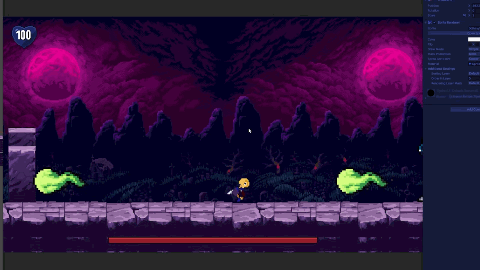
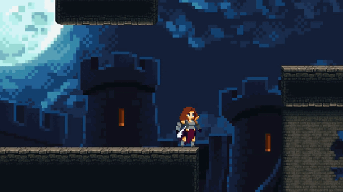
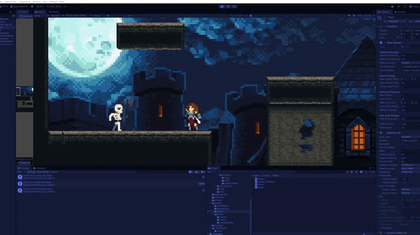
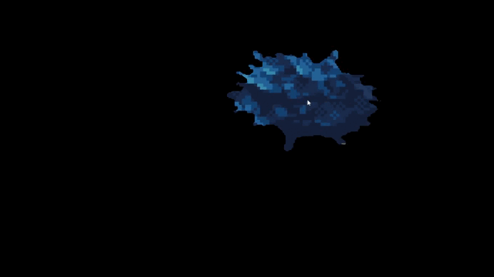
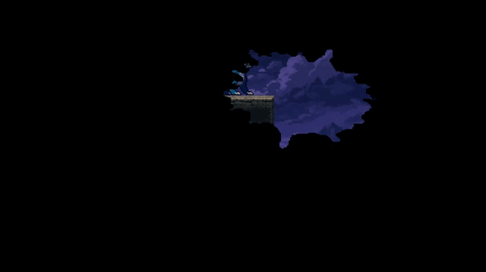
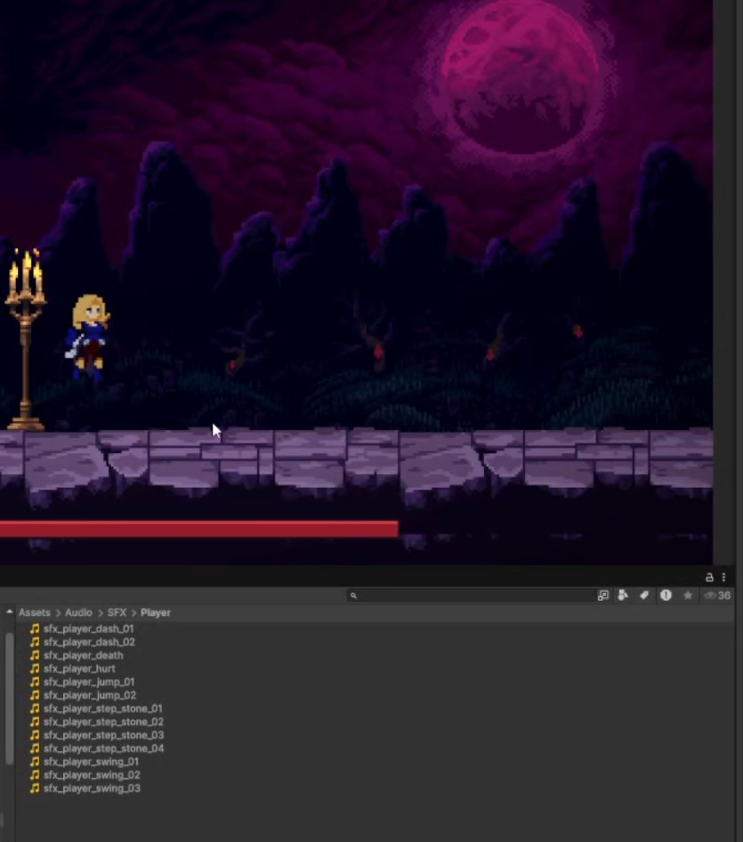
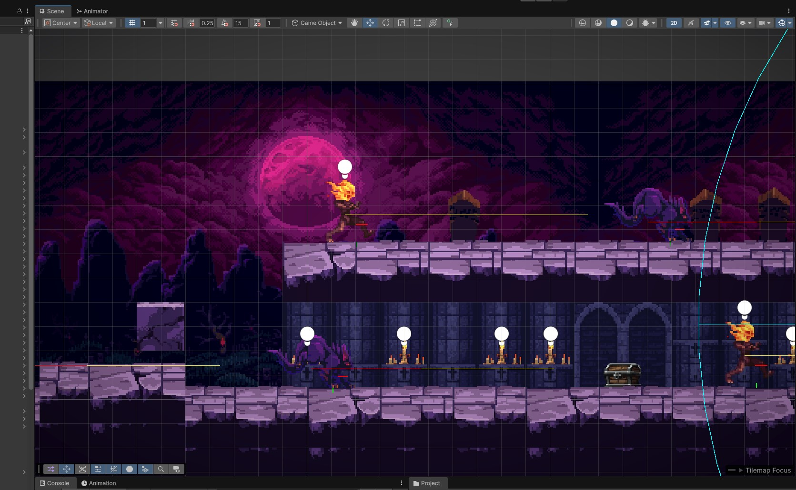

ORIGEN Y ATRIBUCIÓN
Estoy siguiendo el curso de Unity 2D RPG de AlexDev en Udemy para aprender las bases del desarrollo de RPGs en Unity. Una vez termine el curso, utilizaré el conocimiento adquirido y los assets reutilizables — combinados con recursos de itch.io — para construir Fallen Valkyrie como un juego propio y original. Mis conocimientos estan orientados a juegos como los que ya he publicado en itchio, un juego de naves de habilidad en 2D y un simulador en 3D de gestion de cocina en la que preparas platos de sushi. Ademas tengo pendientes de publicar otro shooter de naves 2D y un juego tipo arkanoid. Fallen Valkyrie es mi primer intento de hacer un RPG, y estoy emocionada por el proceso de aprendizaje que esto implica.
Todo el crédito y respeto para AlexDev por el excelente material de enseñanza. Este devlog existe para documentar el proceso con honestidad: de alumna a creadora.
📚 CURSO: ALEXDEV — UNITY 2D RPG (UDEMY)¿DÓNDE ESTAMOS?
LO QUE HAY HECHO HASTA AQUÍ
HASTA HOY · 23/10/2026
El primer nivel está prácticamente terminado y en fase de pulido. La protagonista tiene su kit completo (movimiento, máquina de estados, salto, dash, wall slide y ataque), el esqueleto tiene IA de persecución, retirada, vida y animación de muerte, y el dragón azul ya funciona como boss del nivel con fuego corrosivo y mordiscos letales. El escenario tiene background en parallax, enemigos con estadísticas distintas y cofres con objetos que recuperan vida. Además, el juego ya tiene música y efectos de sonido (assets de itch.io, sin IA), pendientes de pulido. Siguiente paso: pulir el audio, balance final del nivel 1 y seguir avanzando hacia la DEMO.
DIARIO DE DESARROLLO
Las pequeñas victorias cuentan. Cada línea de código es un paso.
DETECCIÓN Y ATAQUE DEL ENEMIGO

Hoy he implementado la detección del jugador por parte del enemigo esqueleto y el sistema de ataque en rango. El esqueleto ahora detecta cuándo el jugador entra en su radio de visión, lo persigue y, si está dentro del rango de ataque, lanza su secuencia de golpe con animación completa.
La lógica está construida sobre la máquina de estados existente: se añadió un estado CHASE y un estado ATTACK que se activan por distancia. El daño al jugador queda conectado al frame exacto del swing de la animación de ataque.
AGRESIVIDAD Y RETIRADA: EL ESQUELETO SE ADAPTA

Hoy el esqueleto ha dejado de ser un muñeco de práctica. He implementado dos nuevos comportamientos que hacen la IA mucho más dinámica: en cuanto detecta al jugador, el enemigo aumenta su velocidad de movimiento para interceptarle con más agresividad. Ya no camina hacia ti, carga.
El segundo cambio es el más interesante: cuando la distancia al jugador cae por debajo de un umbral mínimo, el esqueleto activa un estado de retirada y retrocede para recuperar espacio. Esto crea un ciclo de combate real — el enemigo avanza, ataca, se aleja si estás demasiado encima y vuelve a cargar. El loop de pelea ya tiene ritmo.
COMBATE, VIDA Y MUERTE: EL ESQUELETO CAE

Gran sesión de combate hoy. El esqueleto ahora acelera en cuanto detecta al jugador — el cambio de velocidad de persecución a velocidad de carga es instantáneo y se nota, deja claro que te ha visto y viene a por ti. Con eso el loop de detección/persecución que ya tenía queda mucho más vivo.
También he cerrado el ciclo de combate completo: puntos de vida en el enemigo, efectos visuales en cada golpe recibido (flash + knockback) para que el impacto se sienta, y por fin la animación de muerte del esqueleto cuando su vida llega a cero. Ver caer al primer enemigo con su propia animación en vez de desaparecer sin más ha sido el momento más satisfactorio del proyecto hasta ahora.
EL DRAGÓN AZUL: UN NUEVO TIPO DE AMENAZA

Después de cerrar el ciclo de combate del esqueleto, tocaba subir el listón: el esqueleto era el enemigo de introducción, así que ahora estoy metida de lleno en el poderoso dragón azul, un enemigo con mucha más presencia y que va a exigir su propia máquina de estados desde cero.
De momento el trabajo se ha centrado en montar el esqueleto base: importar el sprite y sus animaciones, dejarlo detectando al jugador y probando el layout del combate en la escena de test. Es un enemigo grande y quiero que se note en pantalla, así que todavía estoy ajustando escala, hitbox y timing de las animaciones para que la lectura del combate sea clara antes de empezar con su set de ataques.
BOSS FIGHT: EL DRAGÓN AZUL DESPIERTA
Por fin está terminada la batalla contra el boss del primer nivel. El dragón azul ya tiene su set de ataques completo: lanza fuego corrosivo que castiga quedarse quieto y, si te acercas demasiado, suelta mordiscos letales que obligan a medir muy bien cuándo entrar a golpear y cuándo salir con el dash. Mecánicas, animaciones y timing del combate cerrados en Unity.
Con el boss listo, el primer nivel está prácticamente completo y ahora toca perfilarlo. Ya tiene background en parallax para dar profundidad al escenario, enemigos con distintas estadísticas de vida, daño y velocidad para que cada encuentro se sienta diferente, y cofres repartidos por el mapa con objetos que recuperan vida. Quedan los últimos ajustes de balance y pulido, pero el nivel 1 ya se juega de principio a fin.
EL JUEGO YA SUENA: MÚSICA Y EFECTOS DE SONIDO

Esta semana le ha tocado al audio y no exagero si digo que la estética y la sensación del juego han subido un 1000%. Música de fondo, pasos, saltos, el dash, los golpes de espada, los enemigos... de repente cada acción tiene peso y el mundo de Fallen Valkyrie se siente vivo. En la captura se ve parte del trabajo en Unity: un buen puñado de clips de audio ya enganchados al jugador.
Estoy súper contento con los assets de sonido que he comprado en itch.io: hechos por artistas de verdad y sin nada de IA, que para mí es algo importante. Todavía me queda mucho por pulir (volúmenes, mezcla, variaciones y que cada sonido encaje en su momento exacto), pero cada paso que doy acerca un poco más la DEMO. ¡Ya queda menos!
DISEÑO DE NIVELES: DANDO FORMA AL NIVEL 1

Ahora mismo estoy de lleno con el desarrollo de niveles, y más concretamente con el nivel 1. Toca la parte de construir el mundo pieza a pieza: colocar enemigos, repartir cofres, montar los suelos y plataformas y llenar todo de decoración para que el escenario respire y no sea solo un pasillo.
Es un trabajo lento y de mucho probar, mover y volver a probar, pero me está gustando muchísimo el resultado que está tomando esto. Por primera vez el nivel se siente como un sitio de verdad por el que dan ganas de avanzar. La DEMO está cada vez más cerca. ¡Seguimos!